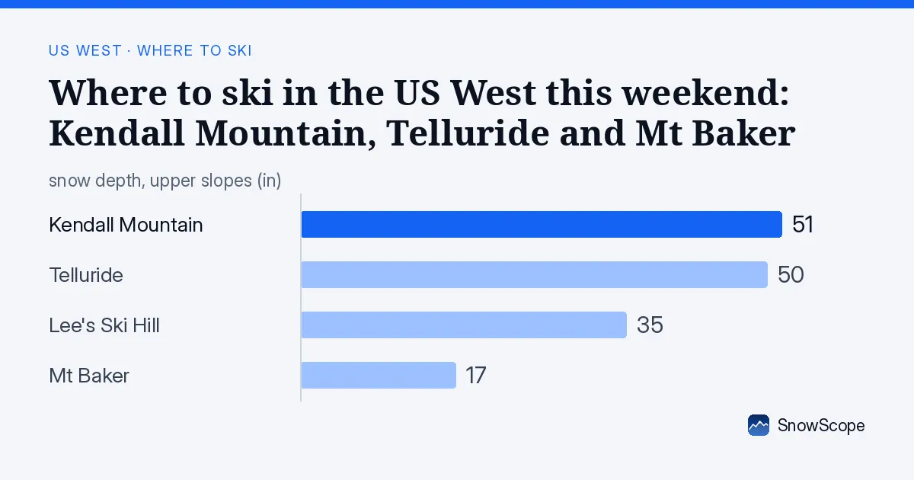

Kendall Mountain 51 inches: deepest snow in late December and March
Kendall Mountain carries 51 in (130 cm) on upper slopes today, early-season coverage that is thin by mid-winter standards. Snow at this site reaches peak depth in late December, early March, and mid-March—a seasonal pattern worth knowing if you plan a visit here.
See the live snow forecast for Kendall Mountain in the SnowScope appSnow depth, powder alerts and the 3D map, free.
Today at Kendall Mountain
Kendall Mountain tops out at 9,500 ft (2,904 m) and shows 51 in (130 cm) on upper slopes.
This depth beats 25 of the past 46 Novembers on this date, a decent start for the season. But Kendall's real strength shows later: snow peaks in late December, early March, and mid-March. If you want to ski this site at its best, earmark those three windows.
| Resort | Snow depth | New snow, 72 h | Coming, next days | Top |
|---|---|---|---|---|
| Kendall Mountain | 51 in (130 cm) | 1 in (3 cm) | 1 in (2 cm) | 9,528 ft (2,904 m) |
| Telluride | 50 in (126 cm) | 2 in (4 cm) | 1 in (2 cm) | 12,507 ft (3,812 m) |
| Mt Baker | 17 in (42 cm) | 6 in (16 cm) | 17 in (42 cm) | 5,105 ft (1,556 m) |
| Lee's Ski Hill | 35 in (88 cm) | 2 in (4 cm) | 1 in (2 cm) | 7,943 ft (2,421 m) |

This weekend forecast
Saturday brings 0.04 in (1 cm) of new snow. Sunday stays dry. That is 0.04 in (1 cm) for the full weekend—not a base builder. But with no rain risk (the freezing level reaches 11,600 ft or 3,550 m, well above the peak) and a frozen surface, existing snow should hold.
This is a hold-what-you-have weekend, not a snow-grab weekend.
When snow is deepest here
Kendall Mountain's snow historically peaks in three windows: late December, early March, and mid-March. The mid-elevation carries 3.5 in (9 cm) today, beating 25 of the past 46 Novembers on this date—a decent start, though early season is always a gamble with melt.
If Kendall is on your radar, earmark those three windows: late December for holiday crowds, or March for spring tours with longer days. That is when this site rewards a visit.
What else works this weekend?
Across the US West, 145 of 195 resorts report snow today, down from 150 three days ago. Telluride carries 50 in (126 cm) on upper slopes and 43 in (108 cm) at the summit, which tops out at 12,500 ft (3,812 m). Its mid-elevation carries 11 in (29 cm)—more than Kendall's 3.5 in (9 cm). Some of that is altitude; some is luck with more accumulation already. If you want volume this weekend, Telluride is the better bet.
Mt Baker sits at 5,100 ft (1,556 m) with only 17 in (42 cm) now. But a large storm is arriving. Friday brings 4 in (11 cm), Saturday 2 in (6 cm), and Sunday 10 in (25 cm)—a total of 17 in (42 cm) in three days. By Sunday evening, Mt Baker might become the region's draw. Watch this forecast closely.
What to know before you go
Early-season snow is thin and rocks hide underneath. Stick to groomed pistes and marked terrain until you know the base. Check the resort website for lift status before you drive.
Conditions soften after first light, so morning is best. North-facing slopes hold snow longest. If you plan off-piste runs, read the official avalanche bulletin for the region first.
Looking ahead
The forecast shows the region shrinking: 145 resorts with snow today will drop to 133 by November 8. This is normal for November. The real season builds in December.
If you head out this weekend, Telluride offers more coverage. If you are planning December or March, Kendall Mountain is worth noting as a site that holds decent base at higher elevation through spring.
Tips for skiers
- Check Kendall Mountain's website for lift status before you drive—with 51 in (130 cm), early-season operations may be limited; verify ahead of time.
- That 51 in (130 cm) is thin; rocks hide underneath. Stick to groomed pistes where the base is known, not off-piste exploration.
- The 0.08 in (2 cm) forecast will not change much. Ski first light on north-facing slopes, which last longest in November.
- Saturday's freezing level reaches 11,600 ft (3,550 m), so rain is not a risk, but afternoon slush is possible. Early turns are safest.
- Kendall's snow peaks in late December and March, not November. If you are scouting ahead for a better trip, earmark those weeks.
About these numbers
Resort snow depths are the deepest snow on the resort's upper slopes on the date shown; they are estimates for an area, not a measurement at one point. Forecasts can change. Always read the official avalanche bulletin before going off-piste.
Official avalanche bulletins: avalanche.org
Cite this report
For research, teaching or the press: the numbers and charts are free to reuse under CC BY 4.0 with this citation.
SnowScope (2026), Kendall Mountain 51 inches: deepest snow in late December and March, https://snowscope.app/blog/en/2026/11/us-west-where-to-ski-this-weekend-5-november-2026.html, accessed 2026-11-05
SnowScope (Atlas Labs). (2026, November 5). Kendall Mountain 51 inches: deepest snow in late December and March. SnowScope snow reports. https://snowscope.app/blog/en/2026/11/us-west-where-to-ski-this-weekend-5-november-2026.html
BibTeX
@misc{snowscope2026uswestwheretoskithisweek,
author = {{SnowScope (Atlas Labs)}},
title = {Kendall Mountain 51 inches: deepest snow in late December and March},
year = {2026},
month = nov,
howpublished = {\url{https://snowscope.app/blog/en/2026/11/us-west-where-to-ski-this-weekend-5-november-2026.html}},
note = {Published 2026-11-05 10:27 UTC; accessed 2026-11-05}
}· CC BY 4.0 · Methods, data and tools →
Kendall Mountain: snow and temperature by height, this winter vs last (tools) →
Follow Kendall Mountain
Free: a message when fresh snow is coming, and the forecast every morning.
More snow reports

Kendall Mountain has 48 in (122 cm) on upper slopes. Telluride ranks second with 46 in (118 cm). SnowScope map shows 224,030 km² of snow cover on 4 November.

Kendall Mountain has the deepest snow in the US West at 50 in (127 cm) upper slopes. Snow covers 74,363 sq mi across the region on 7 November.

Getting to Telluride in winter, airport by airport: Telluride Regional, Montrose, the drive on Highway 145 with the Colorado traction law, and the free gondola to Mountain Village.